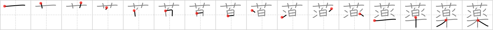

薬
← →
medicine

Reading:
On-Yomi: ヤク — Kun-Yomi: くすり
Heisig story:
Flowers . . . music.
Koohii stories:
1) [rgravina] 28-9-2006(232): New-age medicine involves using things like music and flowers (aromatherapy) as treatment.
2) [shakkun] 28-6-2008(40): Oh man, this medicinal marijuana is making me hear MUSIC and see FLOWERS everywhere…
3) [kanjihito] 7-10-2011(33): Flowers and music are the best medicine to make you happy.
4) [radical_tyro] 13-7-2007(16): You go to the 薬屋 to fill the prescription for your medicine, and upon opening the jar, a flower pops up and music starts playing.
5) [matticus] 26-11-2006(14): Medicine commercials these days don't even tell you what the medicine does! They just play some uplifting music and show people frolicking through fields of flowers.